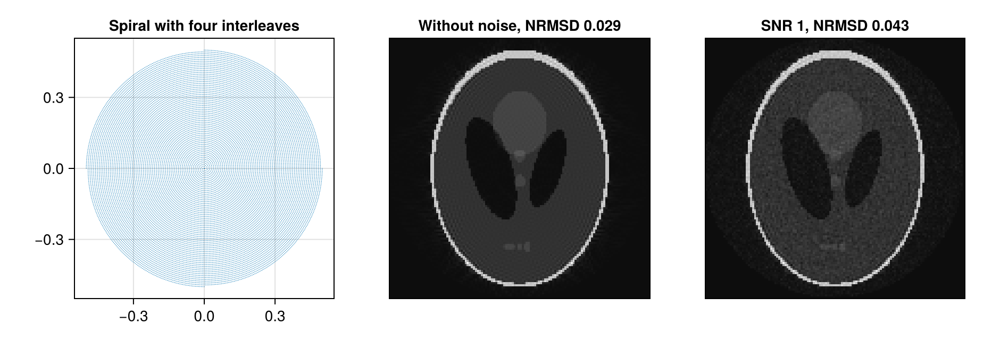

Simulate k-Space Data
MRISimulation computes the k-space data of an image along a trajectory, optionally with coil sensitivities, off-resonance, relaxation, several echoes and noise. Since the image is known, such data are useful to test and compare reconstructions. MRIReco.jl does not depend on MRISimulation, so it is loaded with using MRISimulation.
Simulating from a Parameter Dictionary
simulation takes the image and a dictionary of parameters. params[:trajName] names the trajectory, for example "Cartesian", the default, "Radial", "Spiral" or the 3D trajectory "Kooshball", and params[:numProfiles] and params[:numSamplingPerProfile] are required. Options of the trajectory, such as the number of :windings of a spiral, the readout duration :AQ and :TE, the time of the first sample of each profile, both in seconds, are passed on to trajectory. The example simulates a spiral with four interleaves and eight coils:
using MRIReco, MRISimulation
using ImageUtils: shepp_logan
N = 128
image = shepp_logan(N)
params = Dict{Symbol, Any}()
params[:simulation] = "fast"
params[:trajName] = "Spiral"
params[:numProfiles] = 4
params[:numSamplingPerProfile] = 4096
params[:windings] = 16
params[:AQ] = 10e-3
params[:senseMaps] = birdcageSensitivity(N, 8, 1.5)
acqData = simulation(image, params)
size(acqData.kdata), size(acqData.kdata[1])((1, 1, 1), (16384, 8))The result is an AcquisitionData object with one block of data per contrast, slice and repetition, here a single one, which holds one column of samples per coil. A matrix is simulated as one slice, and a 3D array holds the slices of a 2D trajectory or the volume of a 3D trajectory. The element type of the image sets the precision of the data, so a Float32 image gives ComplexF32 samples.
params[:simulation] chooses how the Fourier integrals are computed: "fast", the default, uses FFTs or NFFTs, and "explicit" evaluates the sums directly. It needs no approximations but is much slower, which matters for larger images, while "fast", with its default options, differs from it only by the accuracy of its approximations, apart from the limits at the end.
Coil Sensitivities
params[:senseMaps] holds the coil sensitivities as an array with the dimensions x, y, z and coils. Give it the element type of the data, as the simulation and the reconstruction require, so ComplexF32 for a Float32 image. birdcageSensitivity computes them for coils on a circle around the center, with the radius relative to half the image width, and measured2DSensitivity returns up to eight measured 2D coil profiles from BART as ComplexF32 arrays without normalization. The reconstruction of the data takes the same maps.
Noise
addNoise returns a copy of the data with complex Gaussian noise. The signal-to-noise ratio, given as a Float64, is the mean magnitude of the samples divided by the root mean square of the noise, computed for each block of data, with all coils together:
using Random
Random.seed!(1) # the same noise in every run
noisyData = addNoise(acqData, 1.0)The figure shows the trajectory and the reconstructions of both data sets, with their normalized root mean squared deviation from the phantom. Since the center of k-space dominates the mean magnitude, the image is much less noisy than the ratio suggests:
using CairoMakie
recoParams = Dict{Symbol, Any}()
recoParams[:reco] = "multiCoil"
recoParams[:reconSize] = (N, N)
recoParams[:senseMaps] = params[:senseMaps]
recoParams[:solver] = CGNR
recoParams[:reg] = L2Regularization(1e-3)
recoParams[:iterations] = 10
images = [reconstruction(acqData, recoParams) => "Without noise",
reconstruction(noisyData, recoParams) => "SNR 1"]
deviation(x) = round(nrmsd(image, abs.(x[:, :, 1, 1, 1, 1])), sigdigits = 2)
nodes = kspaceNodes(trajectory(acqData, 1))
fig = Figure(size = (940, 320))
ax = Axis(fig[1, 1], title = "Spiral with four interleaves", aspect = DataAspect())
scatter!(ax, nodes[1, :], nodes[2, :], markersize = 1)
for (i, (x, title)) in enumerate(images)
ax = Axis(fig[1, i + 1], title = "$title, NRMSD $(deviation(x))", aspect = DataAspect(),
yreversed = true)
heatmap!(ax, abs.(x[:, :, 1, 1, 1, 1])', colormap = :grays)
hidedecorations!(ax)
end
fig
Off-Resonance and Relaxation
params[:correctionMap] adds off-resonance and relaxation in the form of the correction map of the reconstruction, explained in Signal Model and Encoding Operators. Its imaginary part is the off-resonance frequency in radians per second, for example 1im .* quadraticFieldmap(N, N, 125 * 2pi) for frequencies between -125 Hz and 125 Hz, and the simulation applies it with the sampling times of the trajectory, which start at :TE. Its real part is the relaxation rate in 1/s, which only sets the amplitudes of the echoes described below; the dictionary interface does not apply it during the readout (#365). params[:fmap], in radians per second, and params[:r2map] set the two parts separately.
Multi-Echo Data
params[:T_echo], a Vector{Float64} of echo times in seconds, simulates a multi-echo spin-echo sequence with one contrast per echo. The extended phase graph method computes the amplitudes of the echoes from the relaxation rates params[:r2map], or the real part of the correction map, and params[:r1map], and from the flip angles params[:excitationAngle], by default π/2, and params[:refocusingAngles], a vector with one angle per echo, by default π. All contrasts share the trajectory of the parameters, so their echo time does not follow :T_echo.
Simulating along a Given Trajectory
simulation(tr, image, correctionMap; senseMaps) simulates along any Trajectory, for example one from trajectory or from measured data. The image and the correction map are complex arrays with the element type of the trajectory and the slices in their third dimension. Unlike the dictionary interface, this function also applies the real part of the correction map during the readout, as $R_2^*$. opName = "explicit" selects the direct evaluation.
Limits
- A
Float32image needsComplexF32coil sensitivities, for a single coilones(ComplexF32, size(image, 1), size(image, 2), size(image, 3), 1), and, if given, aComplexF32correction map and aFloat32:fmap. For aFloat32image, a correction map or:fmapin double precision makes the simulation fail with aMethodError. Missing or double-precision coil sensitivities do so too, except with"fast"along a non-Cartesian trajectory without a correction map applied during the readout (#366). - If the part of the correction map that the simulation applies during the readout is not zero,
"fast"with the default:methodreturns NaN in every slice in which this part is spatially constant, zero included, and in all slices if all samples have the same time;"leastsquare","hist"and"svd"fail in some of these cases, and"hist"also if this part contains both relaxation and off-resonance (#360). If this part is not zero,"fast"with any:methodalso fails for 3D trajectories (#361) and, for trajectories withcircular = true, such as the built-in radial and spiral ones and the non-Cartesian ones built fromRawAcquisitionData, sets the object to zero outside a circle whose diameter is the longer side of the image (#372)."explicit"works in these cases. - If the simulation applies no correction map during the readout,
"fast"places the samples of Cartesian trajectories on the k-space grid of the image by counting along each axis, not by their nodes; the reconstruction does the same without a correction map. Unless the counted positions are the nodes, the samples end up in the wrong place, or the simulation fails (#373). For"Cartesian"with the default:kminand:kmaxand for"Cartesian3D", they are the nodes only when, along each axis, the image has as many points as the trajectory or, when the trajectory has an even number of them, a whole multiple of it, and for"EPI", they never are (#370)."explicit"places the samples at their nodes. - Along non-Cartesian trajectories, and along Cartesian ones when a correction map is applied during the readout,
"fast"stops with an error for nodes beyond ±0.5, for example those of the spiral above with:kmax = 0.6(#270);"explicit"takes any nodes. - If the image has an odd number of pixels along x or y, or along z for a 3D trajectory,
"explicit"puts its center half a pixel away from where"fast"and the reconstruction put it along that axis, so that the reconstruction of its data is shifted by half a pixel (#375). - With several echoes and several slices, the data of the echoes and slices end up in the wrong blocks (#367).
simulation(image, params, filename), which should store the data in a file, fails (#295).- After
using MRIReco, MRISimulation, the namenumContrastsis ambiguous (#298);MRIBase.numContrasts(acqData)returns the number of contrasts.
This page was generated using Literate.jl.